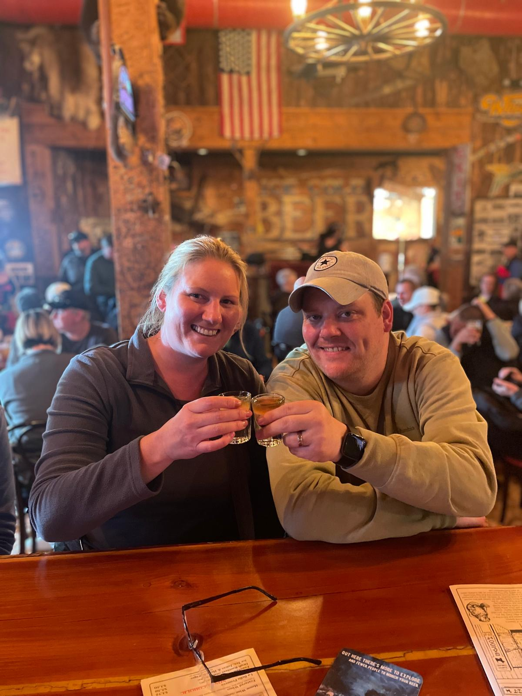
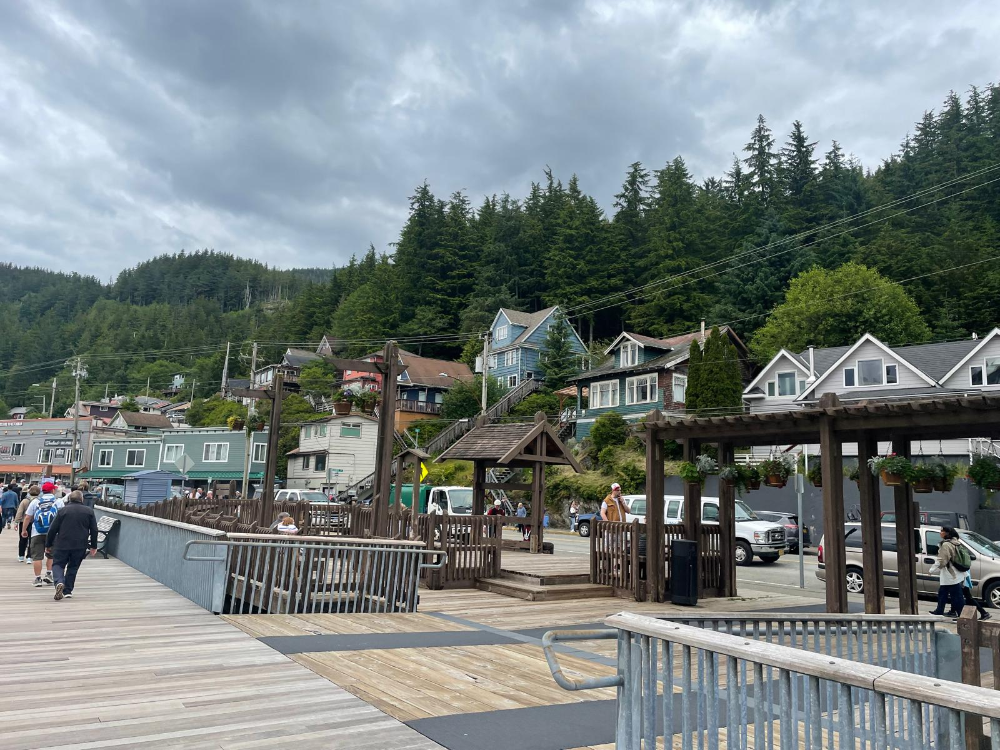
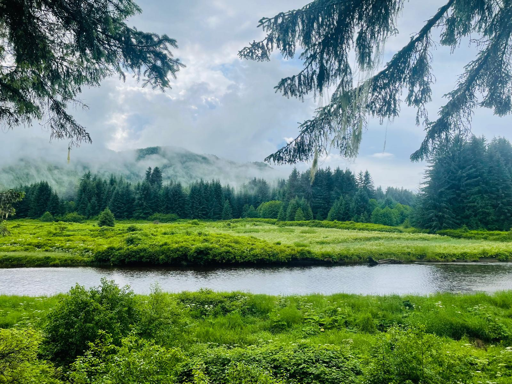
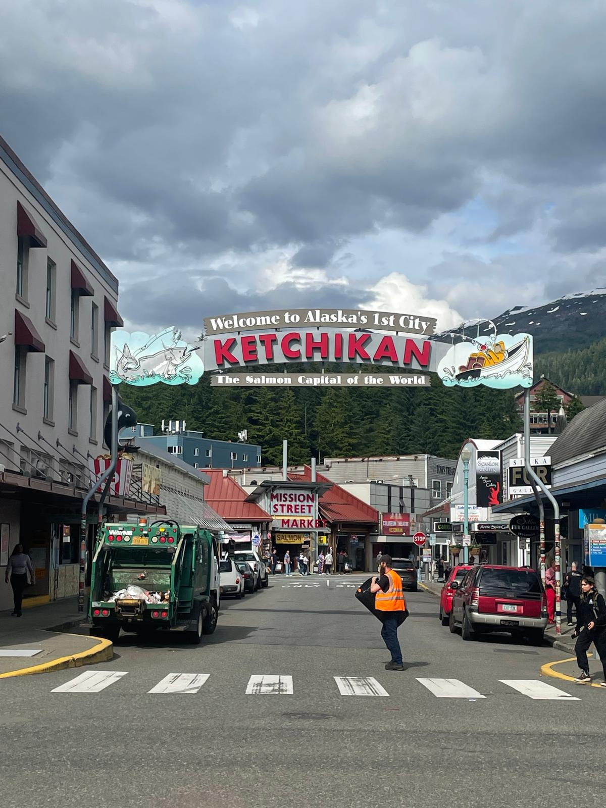
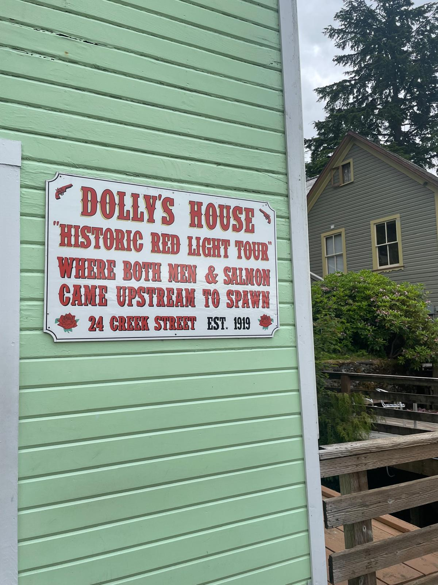
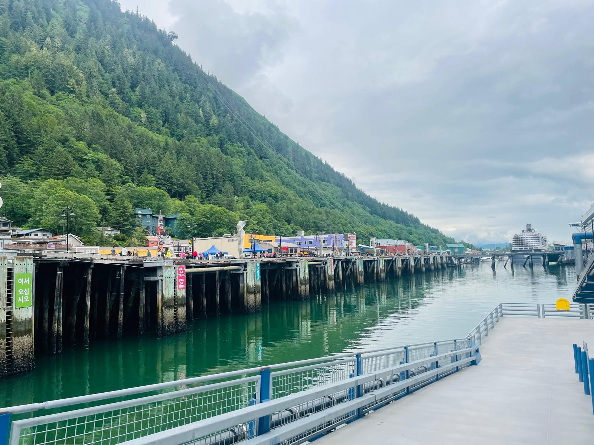
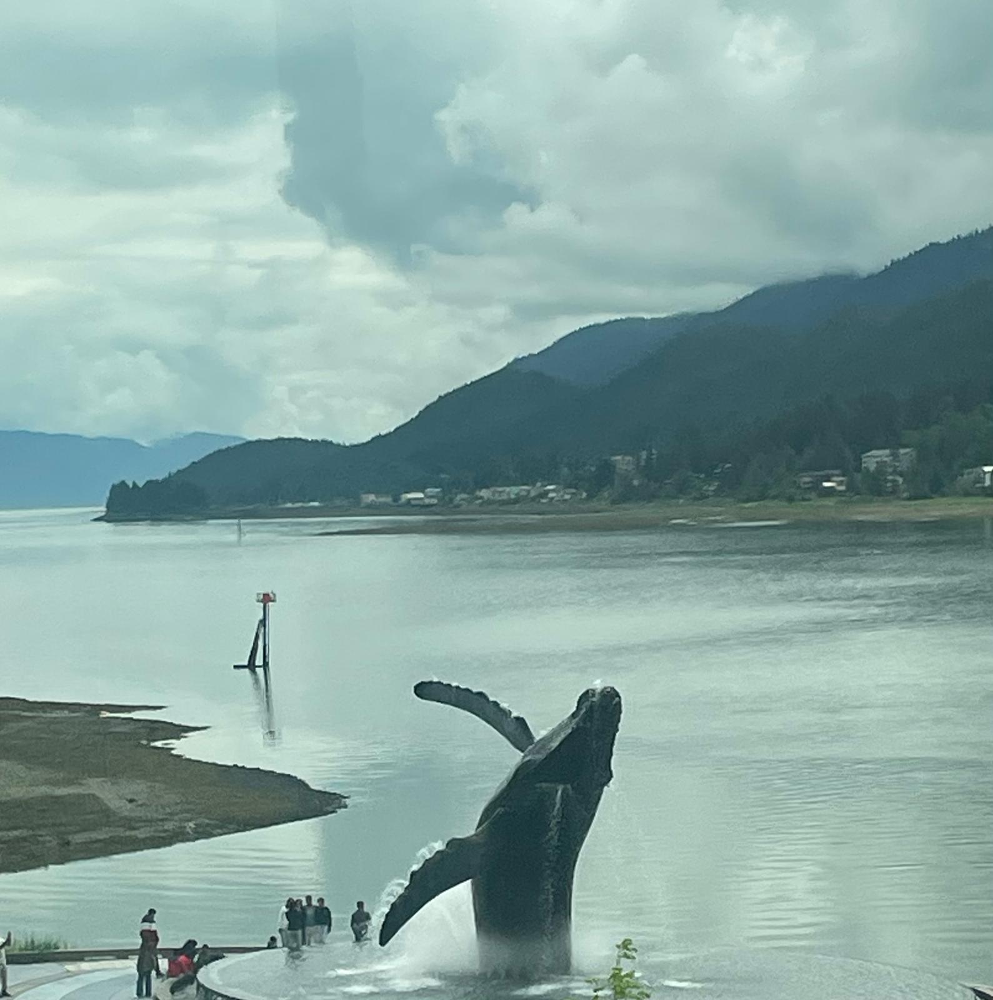
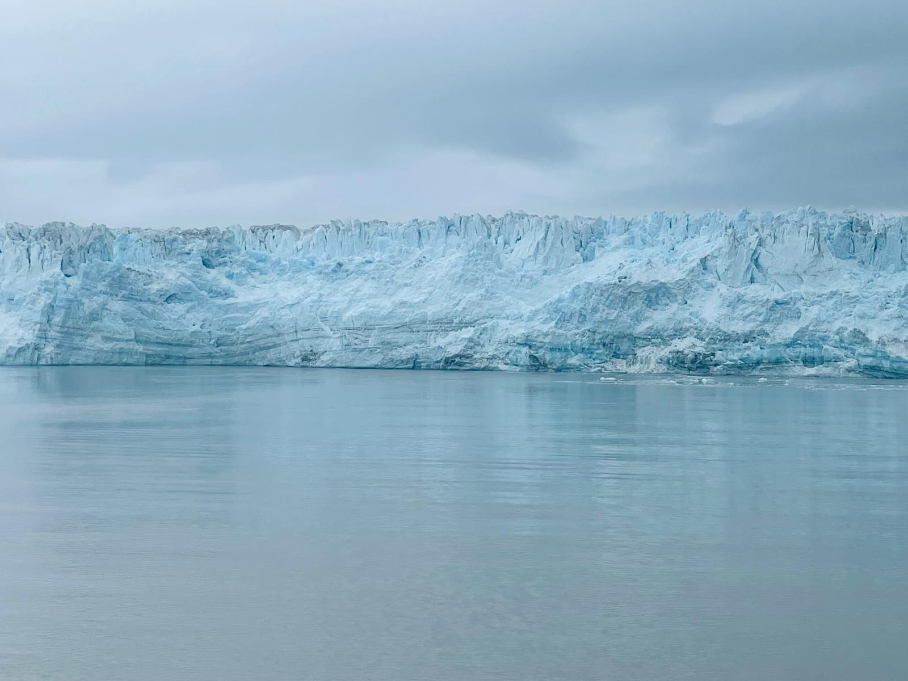
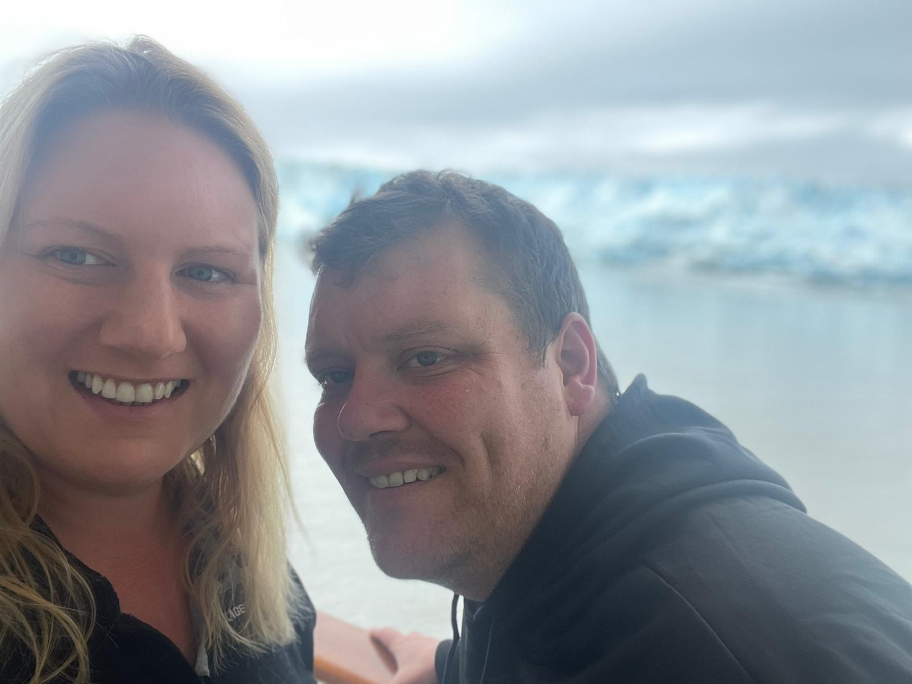
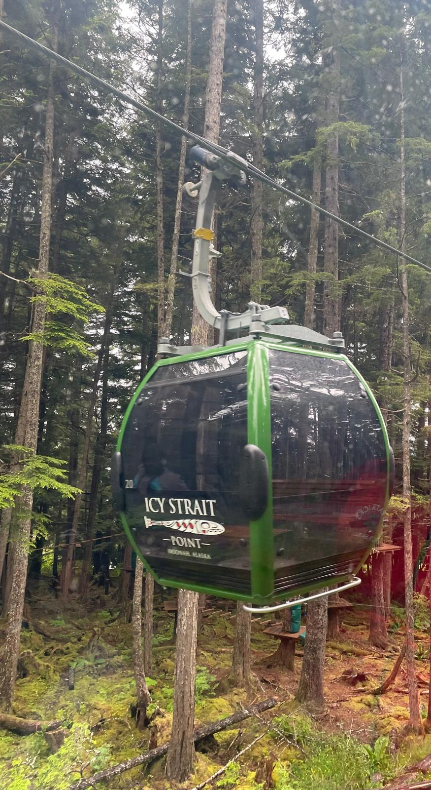

We sailed round-trip from Vancouver on an 8-day Alaskan Inside Passage cruise — and what followed was one of the most spectacular, hilarious, and genuinely unforgettable trips we've ever done. Icy Strait Point, Hubbard Glacier, Juneau, Ketchikan, glaciers, humpback whales, grizzly bears, nine sled dogs pulling us at full speed through the Alaskan wilderness, a lumberjack show, and enough craic with Scottish strangers to last a lifetime. This is our honest account. In Nicola's words. 😄
Our exact cruise route
This was our actual round-trip Alaska cruise itinerary from Vancouver. It gave us a brilliant mix of scenic cruising, wildlife, glacier viewing and proper port days — without needing to fly into or out of Alaska itself.
Embarkation day. Sailing out of Vancouver is genuinely spectacular, with the skyline, harbour and mountains all around you as the ship heads towards the Inside Passage.
A scenic cruising day through one of the most famous cruise routes in the world. Think forested coastline, calm water, mountain views and eyes glued to the sea for whales.
Our bear watching day. Icy Strait Point felt quieter, wilder and more remote than the bigger ports, with Hoonah nearby and proper wilderness on the doorstep.
A huge glacier-viewing day from the ship. No shore excursion needed — this is all about getting out on deck and taking in the scale of the blue ice and surrounding landscape.
A full day in Alaska's capital and the day we did our Dog Sledding Discovery Tour. Juneau also gave us shops, the Red Dog Saloon and the famous Duck Fart Shot.
A later port day with time for Creek Street, Dolly's House, a wander around town and the very entertaining Ketchikan Lumberjack Show.
A final scenic cruising day back through the Inside Passage — perfect for photos, relaxing onboard and pretending the holiday was not nearly over.
Back into Vancouver early in the morning. Very handy if you are adding time in the city before or after the cruise.
We sailed on a Celebrity Cruise for our Alaskan adventure — and if you're looking to book something similar, TourRadar has excellent Alaskan cruise options worth checking out.
If an Alaskan cruise has been on your bucket list, this is the one worth looking at: round-trip Vancouver, Inside Passage scenic cruising, Icy Strait Point, Hubbard Glacier, Juneau and Ketchikan.
Disclosure: This is an affiliate link. If you book through it we may earn a small commission at no extra cost to you.
Day 1 and sea days — Vancouver, Inside Passage and ship life
The first part of the cruise was all about getting settled onboard, sailing away from Vancouver and easing into the rhythm of scenic sea days through the Inside Passage. In theory, very relaxing. In reality: quizzes, cocktails, spa raffles, specialty dining and us somehow getting competitive almost immediately.
Check-in and bag drop was seamless — literally onboard and through passport control within 15 minutes of arriving at the port. The airport authorities could learn a lesson or two from these cruise ship crews!
There's absolutely loads to do onboard — trivia, pub quizzes, spa treatments, cocktails... and that's just before lunch! We dipped our toes into a couple of the quizzes and, would you believe it, we actually won one! Podge did the heavy lifting while I was held up in the spa at a raffle. Didn't win that. 😢
The cocktail menu has been thoroughly explored (purely for research purposes, of course!). Meanwhile, the Americans on board were getting absolutely plastered on Bud Light and had to retreat to their cabins by 8pm. Rookie mistake. But their early bedtime meant we had a wonderfully calm evening on deck, followed by dinner at Murano's — DIVINE. Easily one of the best meals I've ever had. So good, we've already booked in for lunch there on Friday.
We tried our luck in the casino — which basically means we donated a few dollars to the ship's retirement fund. 😂






Day 3 — Icy Strait Point, docked 1:30 pm to 9:00 pm
Icy Strait Point was our first Alaska port and it instantly felt different to the big cruise towns. It is close to the village of Hoonah and has that quieter, wilder, more remote Alaska feel. Our main plan here was bear watching — which turned into a very damp test of patience before Alaska finally delivered.
Landed and made our way to Icy Strait Point. Hopped on a gondola into Hoonah — a little village full of souvenir shops and chowder. Got the usual tourist tat: fridge magnets and key rings. Grabbed a bowl of shrimp chowder that was good, then headed off to the big event: bear watching.
Now. When I tell you we spent 2.5 hours wandering through the woods in the lashing rain like weirdos — I'm not messing! Not a sniff of a bear. At this point I was convinced we'd been scammed.
Just as we were heading back, ready to throw in the towel and demand a refund — we spot one. A BEAR! Big lad. Pure majestic. On the side of the road! Back to Hoonah we went, high on adrenaline and chowder fumes. 🐻
Worth every wet minute — the moment you spot a big brown bear in the wild makes the whole thing completely unforgettable. Bring waterproofs and patience.
Disclosure: If you book through this link we may earn a small commission at no extra cost to you.
Day 4 — Hubbard Glacier, scenic cruising 9:30 am to 2:30 pm
Hubbard Glacier was the big scenic cruising day of the itinerary. You do not dock here — the ship sails into position and the glacier becomes the main event. Blue ice, huge scale, mountains around you, everyone wrapped up on deck trying to take photos that will never fully capture it.
Aw lads, the head was bursting today after the Scots had us up half the night — singing, dancing, having the craic! Wouldn't have minded so much if they weren't gliding about this morning, cocktails in hand, not a bother on them. Meanwhile, we were clinging to the coffee machine like it was life support.
Eventually we gazed at the Hubbard Glacier for a bit, trying not to fall asleep standing up. Then gave in and collapsed back into the cabin for a glorious, well-earned nap. 💤
Later, dinner at Le Petit Chef — dinner meets theatre meets Disney! Each course came with an animated show projected onto your table. The food was unreal. 😋



Day 5 — Juneau, docked 7:30 am to 7:00 pm
Juneau was our longest port day, which made it perfect for a proper shore excursion. We chose dog sledding, and it ended up being one of the most joyful, ridiculous, adrenaline-filled experiences of the entire trip. After that, we had time to explore Juneau itself and naturally ended up in the Red Dog Saloon.
We disembarked in Juneau and were whisked away for our Dog Sledding Discovery Tour — talk about bucket list stuff! Our journey took us to the Musher's Camp, and if I could describe it in one word: EPIC. The adrenaline rush of being pulled by 9 dogs was something else. The speed? Insane. The control? Honestly, a little iffy at times!
After our high-speed mush, we had a lecture on mushers, their dogs, and the legendary Iditarod race — like the Olympics of dog sledding. Then came the pièce de résistance: the PUPPIES. So fluffy, so soft, I could've spent the entire day cuddling them. 🐶
Once we reluctantly pried ourselves away, we were dropped back in Juneau — Alaska's capital. After a browse of the shops, we made our way to the infamous Red Dog Saloon. If you're in Juneau, you've GOTTA try the Duck Fart Shot. It's a local specialty and, I'll be honest, delicious! 🍸
P.S. We won the table quiz that evening. Proud owners of the Celebrity Medal! 🙌
Our dog sledding reel from Juneau — watch before you book!
Disclosure: If you book through this link we may earn a small commission at no extra cost to you.
Day 6 — Ketchikan, docked 1:30 pm to 8:00 pm
Ketchikan was a later port day, so we had the morning onboard before heading ashore. It is a great stop for an easy wander: Creek Street, Dolly's House, shops, bars and then the Lumberjack Show, which turned out to be much more fun than we expected.
Woke up ridiculously early and thought I'd take advantage of the peaceful hour by slipping into the hot tub. Changed into my tankini with great optimism... only to discover it wasn't open yet. And it was cold! 🥶 Sat shivering in a dressing gown ten times too small for me — all on display — chatting to a lovely Indian chap on deck. He wasn't expecting the sight, I can tell you! 😆
After lunch, we explored Ketchikan. First stop: Dolly's House on historic Creek Street — once the heart of the old Red Light District. Dolly was the last licensed madam in Ketchikan. Among the relics: her electric vibrator (way ahead of her time — go, girl!), a shower curtain embroidered with condoms, and all kinds of curious paraphernalia. An educational experience! 😆
The highlight of the day though was the Lumberjack Show — an energetic, one-hour show of rugged, muscly men scaling poles, log-rolling and axe-throwing with wild precision. A nice bit of afternoon eye candy!! 😄
The Ketchikan Lumberjack Show — our reel

Disclosure: If you book through this link we may earn a small commission at no extra cost to you.
Why an Alaskan cruise is worth it
One of the major scenic highlights of the route. Watching it from the ship — the blue ice, the scale, the silence — is genuinely awe-inspiring.
Two scenic cruising days through one of the world's classic cruise routes, with forested coastline, mountains, islands and wildlife-spotting potential.
Keep your eyes on the water and the shoreline. Whales, bald eagles, bears and dramatic wilderness are the whole magic of this itinerary.
Nine dogs, full speed, the Alaskan wilderness — and then puppies at the end. One of the most exhilarating and joyful experiences of our entire trip.
Two and a half hours in the rain at Icy Strait Point. One massive, majestic brown bear on the side of the road. Worth every single wet minute.
Quizzes, shows, specialty restaurants, Scottish friends who kept us up far too late, and a casino that kept Padraig in surprisingly good form. 😄
What to pack for Alaska
Alaska is stunning but the weather changes fast and you will get wet. These are the things we'd pack without hesitation for an Alaskan cruise or shore excursion.
Non-negotiable. You will get rained on — especially at Icy Strait Point. A proper waterproof set keeps you comfortable and dry for the whole excursion.
View on Amazon →The terrain on shore excursions varies a lot. Waterproof boots with good grip are essential for bear watching, dog sledding and any woodland trails.
View on Amazon →Even good boots benefit from a waterproof spray top-up before you travel. A small can goes a long way and keeps your feet dry all day.
View on Amazon →Brilliant for wet or cold excursions and glacier viewing from the deck. Pocket-sized, cheap, and you'll be very glad you packed them.
View on Amazon →You'll want your phone out constantly for photos and videos — a waterproof pouch protects it on wet excursions and on the ship deck near the glacier.
View on Amazon →Essential for whale watching and glacier viewing from the ship deck. Bald eagles, humpback whales, bears on the shoreline — you'll use these constantly.
View on Amazon →Signal on a cruise can be expensive. An eSIM gives you data connectivity at the ports without paying cruise ship roaming rates. Well worth it.
View on Amazon →Your cruise card is your key, your payment card and your ID all in one — you need it constantly. A lanyard means you never have to hunt for it.
View on Amazon →Disclosure: These are Amazon affiliate links. If you buy through them we may earn a small commission at no extra cost to you. These are all things we'd genuinely pack for an Alaskan cruise.
Common questions
We sailed Alaska on a Celebrity Cruise and it was one of the greatest experiences of our lives. If you're looking to book an Alaskan cruise, TourRadar has some brilliant similar options worth checking out.
Affiliate disclosure: if you book through our links we may earn a small commission at no cost to you. We only recommend experiences we've done ourselves and would do again.